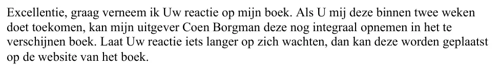

Preuve · Lettre
Giltay à la ministre de la Défense, 10 mars 2014
Le passage
« Excellence, je serais heureux de connaître votre réponse à mon livre. Si vous me la faites parvenir dans les deux semaines, mon éditeur Coen Borgman pourra encore la reproduire intégralement dans le livre à paraître. Si votre réponse se fait un peu plus attendre, elle pourra être publiée sur le site web du livre. » Page 1, le troisième paragraphe de la lettre. Traduit du néerlandais ; le texte original figure ci-dessous.
Texte original
“Excellentie, graag verneem ik Uw reactie op mijn boek. Als U mij deze binnen twee weken doet toekomen, kan mijn uitgever Coen Borgman deze nog integraal opnemen in het te verschijnen boek. Laat Uw reactie iets langer op zich wachten, dan kan deze worden geplaatst op de website van het boek.”

Pourquoi ce document compte
Par cette lettre, remise en main propre au ministère le 10 mars 2014, la ministre de la Défense a reçu le manuscrit du Général de dissimulation, avec la demande d’une réponse, qui pouvait encore figurer dans le livre si elle parvenait dans les deux semaines. La deuxième page est l’accusé de réception, signé au ministère le jour même. L’essai affirme qu’en mars 2014, les ministres de la Défense et de l’Intérieur ont reçu le manuscrit complet avant publication, accompagné d’une notification formelle et d’un délai de réponse. L’envoi du manuscrit aux deux ministres, avec une demande de réponse, figure depuis 2016 comme un fait incontesté dans l’arrêt d’appel.
Provenance
- Document
- Lettre avec accusé de réception, 2 pages
- Expéditeur
- Edwin Giltay, journaliste, La Haye
- Destinataire
- La ministre de la Défense, Plein 4, 2511 CR La Haye
- Date
- La Haye, 10 mars 2014
- Remise
- Portant en tête la mention « in persoon afgegeven tegen bewijs van ontvangst » (remis en main propre contre accusé de réception) ; la page 2 est l’accusé de réception du 10 mars 2014, signé à la main au nom du ministère de la Défense
- Objet
- Le manuscrit du livre De doofpotgeneraal, remis avant publication, avec une demande de réponse dans les deux semaines
- Annexe
- Manuscrit du livre De doofpotgeneraal ; la lettre renvoie au résumé de la page 172
- Langue
- Néerlandais
- Conservé par
- Archives de l’auteur
- Voir aussi
- Giltay au ministre de l’Intérieur, 18 mars 2014Cour d’appel de La Haye, arrêt du 12 avril 2016 (ECLI:NL:GHDHA:2016:870)
Cité dans : l’essai « L’interdiction tombée, le livre debout » dans les chapitres (3) « Ce que révèle le livre : la dissimulation autour de Srebrenica » et (7) « Jamais de réponse sur le fond ».
Fiche de preuve : https://
Document : https://
Dernière modification le 13 septembre 2026, consulté le 9 octobre 2026.

Cette page est une fiche de preuve du livre Le Général de dissimulation d’Edwin Giltay et du site web qui l’accompagne.